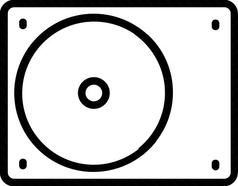
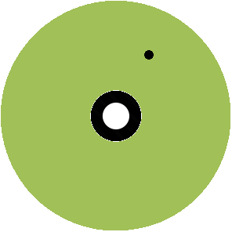
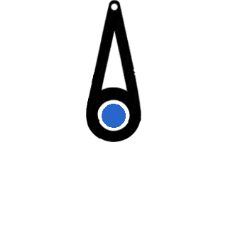

Disco girando
Braço com sensor magnético
A pinta no disco está "imantada"
Hard disk ... disco rígido (bem duro), para não ter ondulações ou sobressaltos
que dificultam a "leitura" das informações.
Antes haviam discos flexíveis coma "cabeça de leitura" apertando o "disquete". Sua capacidade de
armazenamento era ... muito menor!!!
As fitas plásticas impregnadas com óxido de ferro ou cromo (que possibilitam a magnetização de regiões) também eram utilizadas para gravação de dados.
E usadas também para tocar músicas nos gravadores, mini-cassetes, etc.